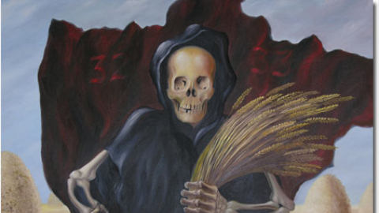

A fome na Ucrânia - um dos maiores crimes do estado foi esquecido
O Holodomor e seus estupefacientes 14,5 milhões de mortes
Como ocorre em todos os regimes totalitários, a Rússia bolchevista temia toda e qualquer manifestação de sentimento nacionalista entre aqueles povos que eram reféns do regime. A propaganda bolchevique relativa aos direitos das várias nacionalidades dentro da esfera de influência da Rússia mascarava o temor do regime em relação ao poder do nacionalismo.
No início de 1918, o líder russo Vladimir Ilitch Lênin tentou impor um governo soviético sobre o povo da Ucrânia, o qual, apenas um mês antes, em janeiro, havia declarado sua independência. De início, o objetivo de Lênin havia sido aparentemente alcançado. Esse governo soviético imposto à Ucrânia tentou de imediato suprimir as instituições educacionais e sociais ucranianas; há até relatos sobre a Cheka, uma precursora da KGB, matando pessoas pelo crime de falar ucraniano nas ruas.
Embora o povo ucraniano tenha, ao final de 1918, conseguido restabelecer sua república, essa vitória foi efêmera. Lênin, sem dúvida, iria querer incorporar a Ucrânia ao sistema soviético de qualquer jeito, porém seu real desejo de assegurar o controle da Ucrânia era por causa de seus grandes recursos naturais. Em particular, a Ucrânia ostentava o solo mais fértil da Europa — daí o seu apelido de "o manancial da Europa".
Já no início de 1919, um governo soviético havia novamente sido estabelecido na Ucrânia. Porém, esse novo governo soviético acabou se tornando mais um fracasso. Todos esses eventos estavam ocorrendo durante a Guerra Civil Russa, e a ajuda de facções rivais contribui para um segundo triunfo da independência ucraniana.
Com esses dois fracassos, o regime de Lênin aprendeu uma valiosa lição. De acordo com Robert Conquest, autor do livro The Harvest of Sorrow (A colheita do sofrimento), "Concluiu-se que a nacionalidade e a língua ucraniana eram de fato um elemento de grande peso, e que o regime que ignorasse isso de maneira ostentosa estaria fadado a ser considerado pela população como uma mera imposição usurpadora."
Quando os soviéticos adquiriram o controle da Ucrânia pela terceira e última vez em 1920, eles constataram que iriam enfrentar uma contínua resistência e incessantes insurreições a menos que fizessem grandes concessões à autonomia cultural ucraniana. E assim, pela década seguinte, os ucranianos basicamente não foram incomodados em seu idioma e em sua cultura.
Porém, uma facção dos comunistas russos se mostrou incomodada com isso, e seguidamente alertava que o nacionalismo ucraniano era uma fonte de intolerável divisão dentro do quadro militar soviético, e que, mais cedo ou mais tarde, a situação teria de ser confrontada de alguma maneira.
A coletivização e a chacina
Avancemos agora oito anos no tempo. Em 1928, com Josef Stalin firmemente no poder, a União Soviética decidiu implantar uma política de requisição compulsória de cereais — uma maneira polida de dizer que o governo iria tomar à força todo o cereal cultivado pelos camponeses, pagando em troca um preço fixado arbitrariamente pelo governo, muito abaixo dos custos de produção.
A liderança soviética, em decorrência tanto de informações equivocadas quanto de sua típica ignorância dos princípios de mercado, havia se convencido de que o país estava no limiar de uma crise de escassez de cereais. A requisição compulsória funcionou, mas apenas no limitado sentido de que forneceu ao regime todo o volume de cereais que ele julgava ser necessário.
Porém, tal política solapou fatalmente a confiança futura dos camponeses no sistema. Durante a Guerra Civil Russa, em 1919, para tentar combater a fome da população urbana, Lênin havia confiscado em escala maciça os cereais de vários camponeses, que foram chamados de especuladores e sabotadores. Agora em 1928, a possibilidade de novos confiscos, algo que os camponeses imaginavam ser apenas uma aberração bárbara da época da Guerra Civil, passaria a ser uma constante ameaça no horizonte.
Os camponeses, naturalmente, passaram a ter menos incentivos para produzir, pois sabiam perfeitamente bem que, dali em diante, os frutos de seu trabalho árduo poderiam ser facilmente confiscados por um regime sem lei — o mesmo regime que havia prometido aos camponeses, quando da promulgação da NEP em 1921, que eles poderiam produzir e vender livremente.
Foi apenas uma questão de tempo para que o regime decidisse embarcar em um amplo programa de coletivização forçada das propriedades agrícolas, uma vez que a abolição da propriedade privada da terra era um importante aspecto do programa marxista.
Os camponeses despejados foram enviados bovinamente para enormes fazendas estatais. Essas fazendas iriam não apenas satisfazer as demandas da ideologia marxista, como também iriam resolver o grande problema prático do regime: garantir que uma quantidade adequada de cereais fosse ofertada às cidades, onde o proletariado soviético trabalhava duramente para expandir a indústria pesada. Fazendas coletivas estatais significavam cereais estatizados.
Alguns especialistas tentaram alertar Stalin de que seus objetivos, tanto industriais quanto agrícolas, eram excessivamente ambiciosos e estavam em total desacordo com a realidade. Mas Stalin nem queria ouvir. Um de seus economistas, diga-se de passagem, chegou a afirmar que "Nossa tarefa não é estudar a ciência econômica, mas sim mudá-la. Não estamos restringidos por nenhuma lei. Não reconhecemos leis. Não há uma só fortaleza que os bolcheviques não possam atacar e destruir."
Paralelamente à política de coletivização forçada implantada por Stalin, ocorreu também uma brutal campanha contra os grandes proprietários de terras, fazendeiros ricos conhecidos como "kulaks", os quais o governo temia liderarem movimentos de resistência contra a coletivização. Mas era uma fantasia de Stalin imaginar que apenas os kulaks se opunham à coletivização; toda a zona rural estava unida contra o governo. (Até mesmo o Pravda noticiou um incidente no qual uma mulher ucraniana tentou bloquear a passagem de tratores que estavam chegando para começar a trabalhar nas fazendas coletivizadas; a mulher gritara "O governo soviético está recriando a escravidão!").
Stalin falava abertamente de sua política de "liquidar toda a classe dos kulaks"; eles eram a classe inimiga da zona rural. Com o passar do tempo, como era de se esperar, a definição padrão de o que constituía um kulak foi se tornando bastante ampla, até finalmente chegar ao ponto em que o termo — e as terríveis penalidades que eram aplicadas a todos aqueles infelizes a quem o termo era aplicado — podia ser aplicado a praticamente qualquer camponês.
Uma historiografia sobre o Partido Comunista, autorizada pelo próprio, relatou que "os camponeses caçaram impiedosamente os kulaks por toda a terra, tomaram todos os seus animais e todo o seu maquinário, e então pediram ao regime soviético para aprisionar e deportar os kulaks."
Como descrição do reino de terror imposto aos kulaks, esse relato não pode nem sequer ser classificado como uma piada sem graça. O regime, e não os camponeses, é quem perseguiu os kulaks. No final, de acordo com uma testemunha ocular, para que um homem fosse condenado a um destino cruel, bastava que "ele tivesse pagado algumas pessoas para trabalhar para ele como empregados, ou que ele tivesse sido o proprietário de três vacas."
As quase 20 milhões de propriedades agrícolas familiares que existiam na Rússia em 1929 estariam, cinco anos depois, concentradas em apenas 240.000 fazendas coletivas. Ao longo de grande parte de toda a história soviética, não era incomum algumas pessoas obterem a permissão para ser donas, em locais distintos, de alguns poucos acres de terra para uso privado.
Quando Mikhail Gorbachev assumiu o poder em 1985, os 2% de terra agrícola que eram propriedade privada produziam nada menos que 30% de todos os cereais do país — uma resposta humilhante para todos aqueles que ignorantemente afirmavam que a agricultura socializada seria mais eficiente que a agricultura capitalista, ou que eles poderiam alterar a natureza humana ou reescrever as leis da economia.
Dizimando a cultura
Na mesma época em que Stalin começou a coletivização forçada, em 1929, ele também recriou a campanha contra a cultura nacional ucraniana, campanha essa que estava dormente desde o início da década de 1920. Foi na Ucrânia que a política de coletivização stalinista deparou-se com a mais ardorosa e violenta resistência — o que não impediu, entretanto, que o processo já estivesse praticamente completo por volta de 1932.
Stalin ainda considerava a contínua e inabalável presença do sentimento nacionalista ucraniano uma permanente ameaça ao regime, e decidiu lidar de uma vez por todas com aquilo que ele via como o problema da 'lealdade dividida' na Ucrânia.
A primeira etapa de sua política foi direcionada aos intelectuais e personalidades culturais da Ucrânia, milhares dos quais foram presos e submetidos a julgamentos ridículos e escarnecedores. Após isso, tendo retirado de circulação aquelas pessoas que poderiam se transformar em líderes naturais de qualquer movimento de resistência, Stalin passou então a atacar o próprio campesinato, que era onde estava o real núcleo das tradições ucranianas.
O horror puro
Mesmo com o processo de coletivização já praticamente completo na Ucrânia, Stalin anunciou que a batalha contra os perversos kulaks ainda não estava ganha — os kulaks haviam sido "derrotados, mas ainda não exterminados." Stalin começaria agora uma guerra — supostamente contra os kulaks — direcionada aos poucos fazendeiros que ainda restavam e dentro das próprias fazendas coletivas.
Dado que, a essa altura, qualquer pessoa que por qualquer definição cabível pudesse ser classificada como um kulak já havia sido expulsa, morta ou enviada para campos de trabalho forçado, essa nova etapa da campanha soviética na Ucrânia teria o objetivo de aterrorizar os camponeses comuns. Estes deveriam ser física e espiritualmente quebrados, e sua identidade de seres humanos seria drenada deles à força.
Stalin começou estipulando metas de produção e entrega de cereais, as quais os ucranianos só conseguiriam cumprir caso parassem de se alimentar, o que os faria morrer de fome. O não cumprimento das exigências era considerado um ato de deliberada sabotagem. Após algum tempo, e com a produção e entrega inevitavelmente abaixo da meta, Stalin determinou que seus ativistas confiscassem dos camponeses todo o volume de cereais necessário para o governo ficar dentro da meta estipulada. Como a produção era baixa, os camponeses frequentemente ficavam sem nada. O desespero se instalou.
Um historiador conta que uma mulher, por simplesmente ter tentado cortar para si um pouco do seu próprio centeio, foi levada presa junto a um de seus filhos. Após conseguir fugir da prisão, ela coletou, com a ajuda do seu filho, alguns poucos itens comestíveis e foram viver na floresta. Morreram após um mês e meio. As pessoas eram sentenciadas a dez anos de prisão e a trabalhos forçados pelo simples fato de colherem batatas, ou até mesmo por colher espigas de milho nos pedaços de terra privada que elas podiam gerir. Tudo tinha de ser do governo.
Os ativistas comunistas afirmavam que os sabotadores estavam por todos os lados, sistematicamente retendo e escondendo comida, impedindo o abastecimento das cidades, e desafiando as ordens de Stalin. Esses ativistas invadiam de surpresa as casas dos camponeses e faziam uma varredura no local em busca de alguma comida escondida. Aqueles ativistas mais bondosos ainda deixavam algum resquício de comida para as famílias, porém os mais cruéis saíam levando absolutamente tudo o que encontravam.
O resultado foi totalmente previsível: as pessoas começaram a passar fome, em números cada vez maiores. Um camponês que não tivesse a aparência de alguém que estava esfomeado era imediatamente considerado suspeito pelas autoridades soviéticas de estar estocando comida. Como relata um historiador, "Um ativista comunista, após fazer uma busca minuciosa pela casa de um camponês que não aparentava a mesma fome dos demais, finalmente encontrou um pequeno saco de farinha misturada com casca de árvore e folhas. O material foi confiscado e despejado em um lago do vilarejo."
Robert Conquest cita o testemunho de outro ativista:
Eu ouvi as crianças... engasgando sufocadas, tossindo e gritando de dor e de fome. Era doloroso ver e ouvir tudo aquilo. E ainda pior era participar de tudo aquilo.... Mas eu consegui me persuadir, me convencer e explicar a mim mesmo que aquilo era necessário. Eu não poderia ceder; não poderia me entregar a uma compaixão debilitante .... Estávamos efetuando nosso dever revolucionário. Estávamos obtendo cereais para a nossa pátria socialista....
Nosso objetivo maior era o triunfo universal do comunismo, e, em prol desse objetivo, tudo era permissível — mentir, enganar, roubar, destruir centenas de milhares e até mesmo milhões de pessoas...
Era assim que eu e meus companheiros raciocinávamos, mesmo quando... eu vi o real significado da "coletivização total" — como eles aniquilaram os kulaks, como eles impiedosamente arrancaram as roupas dos camponeses no inverno de 1932-33. Eu mesmo participei disso, percorrendo a zona rural, procurando por cereais escondidos.... Junto com meus companheiros, esvaziei as caixas e os baús onde as pessoas guardavam seus alimentos, tampando meus ouvidos para não ouvir o choro das crianças e a lamúria suplicante das mulheres. Eu estava convencido de que estava realizando a grande e necessária transformação da zona rural; e que nos dias vindouros as pessoas que viveriam ali estariam em melhor situação por minha causa.
Na terrível primavera de 1933, vi pessoas literalmente morrendo de fome. Vi mulheres e crianças com barrigas inchadas, ficando azuis, ainda respirando mas com um olhar vago e sem vida.... Eu não perdi a minha fé. Assim como antes, eu acreditava porque eu queria acreditar.
Em 1933, Stalin estipulou uma nova meta de produção e coleta, a qual deveria ser executada por uma Ucrânia que estava agora à beira da mortandade em massa por causa da fome, que havia começado em março daquele ano. Vou poupar o leitor das descrições mais gráficas do que aconteceu a partir daqui. Mas os cadáveres estavam por todos os lados, e o forte odor da morte pairava pesadamente sobre o ar. Casos de insanidade, e até mesmo de canibalismo, estão bem documentados. As diferentes famílias camponesas reagiam de maneiras distintas à medida que lentamente iam morrendo de fome:
Em uma choupana, era comum haver algum tipo de guerra entre a família. Todos vigiavam estritamente todos os outros. As pessoas brigavam por migalhas, tomando restos de comida umas das outras. A esposa se voltava contra o marido e o marido, contra ela. A mãe odiava os filhos. Já em outra choupana, o amor permaneceria inviolável até o último suspiro da família. Eu conheci uma mulher que tinha quatro filhos. Ela costumava lhes contar lendas e contos de fadas com a intenção de fazê-los esquecer a fome. Sua própria língua mal podia se mover, mas mesmo assim ela se esforçava para colocá-los em seus braços, ainda que ela mal tivesse forças para levantar seus braços quando eles estavam vazios. O amor vivia dentro dela. E as pessoas notaram que, onde havia ódio, as pessoas morriam mais rapidamente. Entretanto, o amor não salvou ninguém. Todo o vilarejo sucumbiu; todos juntos, sem exceção. Não restou uma só vida.
E tudo ainda segue maciçamente ignorado
Normalmente é dito que o número de ucranianos mortos na fome de 1932-33 foi de cinco milhões. De acordo com Robert Conquest, se acrescentarmos outras catástrofes ocorridas com camponeses entre 1930 e 1937, incluindo-se aí um enorme número de deportações de supostos "kulaks", o grande total é elevado para entorpecentes 14,5 milhões de mortes. E, mesmo assim, se apenas 1% dos alunos do ensino médio já tiver ouvido falar sobre esses eventos, isso já seria um pequeno milagre.
Durante o artigo, referi-me várias vezes a Robert Conquest, um excelente historiador da União Soviética. Conclamo, insisto e exorto qualquer pessoa com interesse nesses eventos a ler seu extraordinário livro The Harvest of Sorrow. A leitura flui como se fosse um romance — mas a história relatada é excessivamente real.